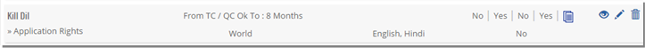
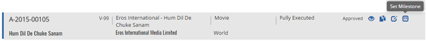
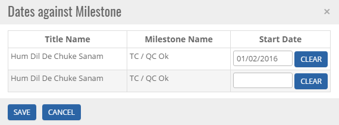
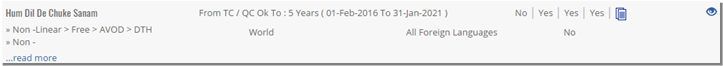


	<section>
		<article>
			<h2>Set Milestone<span></span></h2>
			<div>
				<p></p>
				<p>Milestone Date is set by the user once the Milestone is achieved based on type of milestone selected for the right.</p>

				<p>When a right is created with Right Period as Milestone , it will look like this.</p>

				<div class="triangle-border top">				
					
				</div>

				<p>User can set the milestone date only when the deal is approved.</p>

				<p>When a deal is approved , User can set milestone by clicking Set Milestone button on Acquisition Deal List Page.</p>

				<div class="triangle-border top">				
					
				</div>

				<p>On clicking Set Milestone button, Dates against Milestone popup will be displayed. Here, User can select the start date for the right period and click save to set the date or cancel to undo changes.</p>

				<div class="triangle-border top">				
					
				</div>

				<p>Once saved the respective right on the Rights tab will look like this.</p>

				<div class="triangle-border top">				
					
				</div>

				<p>Right period will start from the date set by the user on the Deal list page till the term defined.</p>

			</div>
		</article>
	</section>